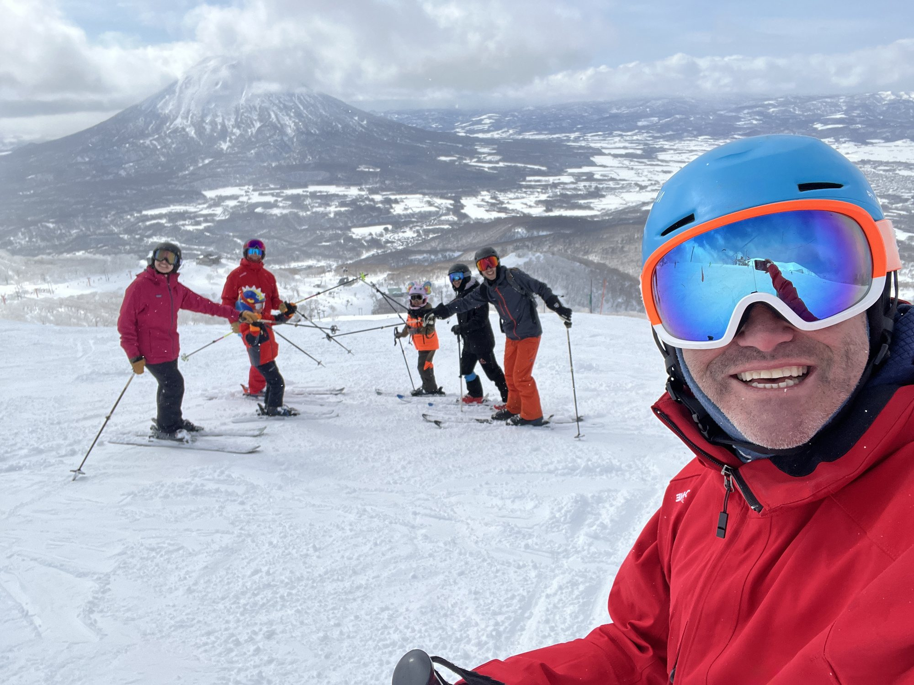
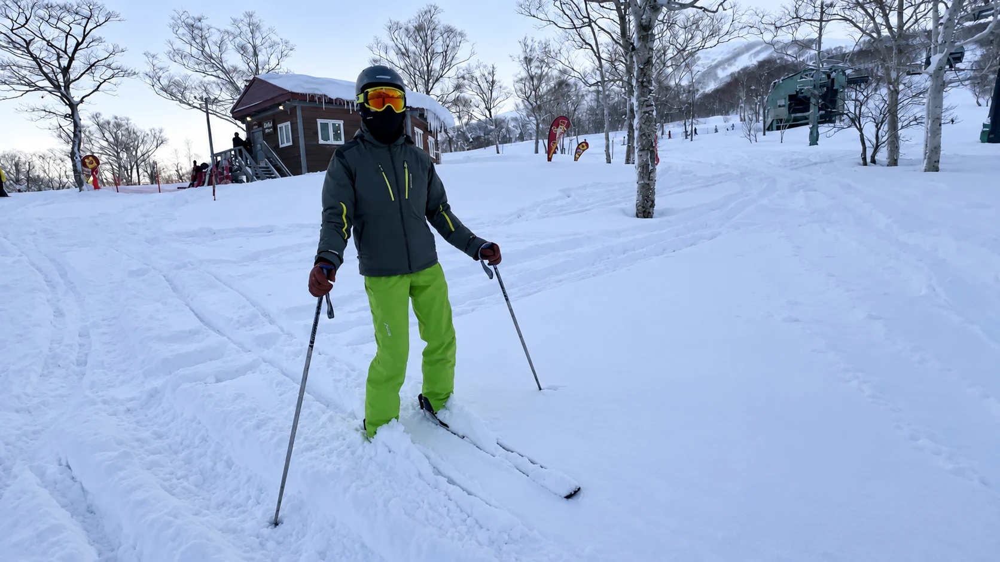
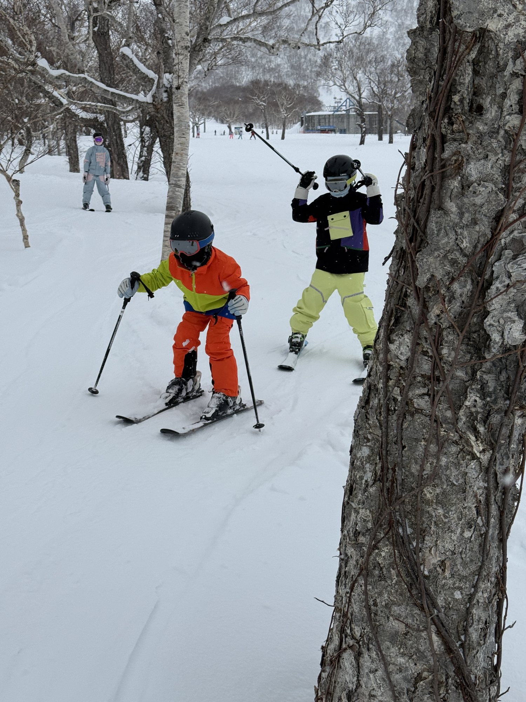
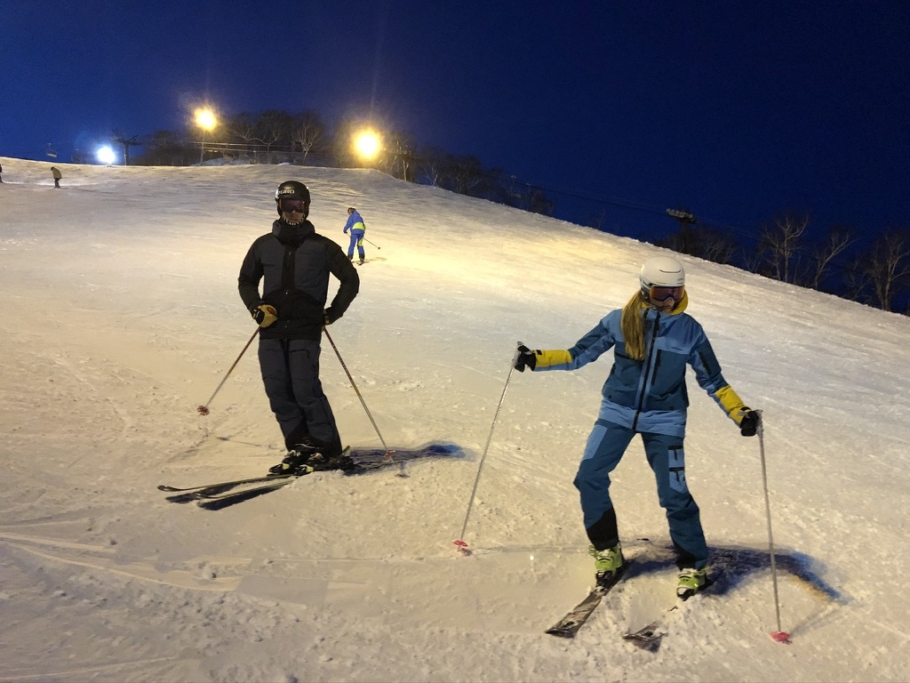
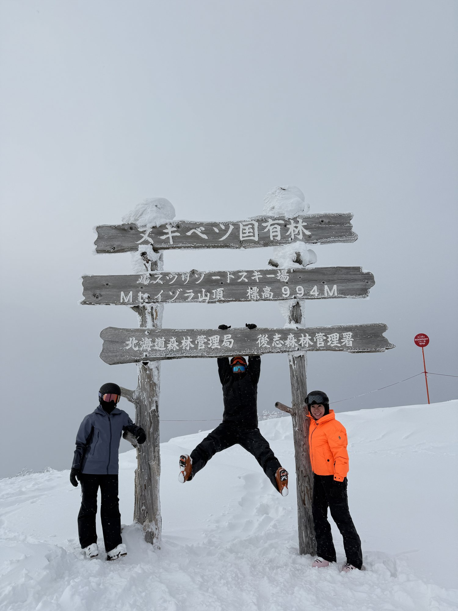
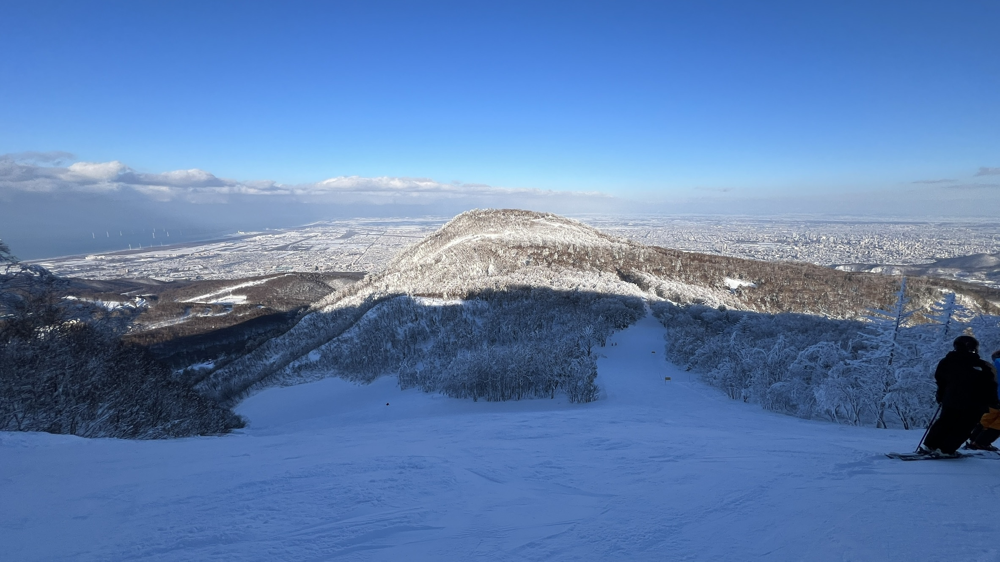
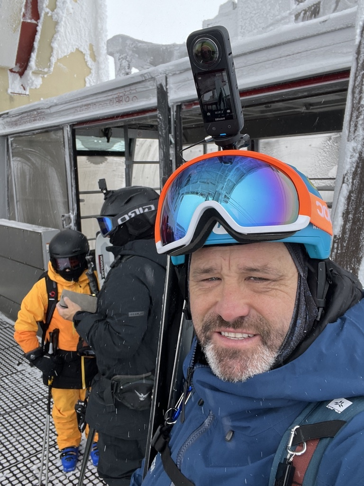
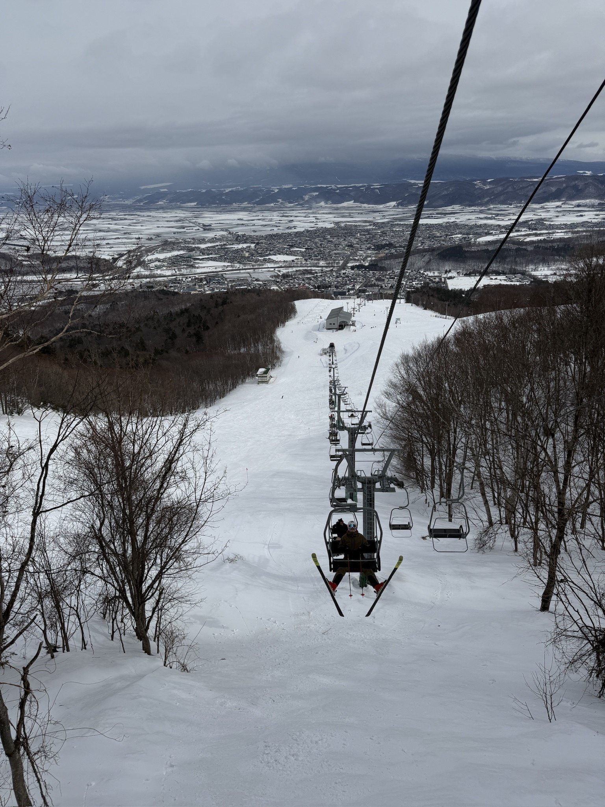

Consistent snowfall
Regular storms can refresh the mountains throughout your stay, creating the light snow Japan is famous for.
Niseko · Japan
Private instruction, coaching and guiding—with the flexibility to find the snow, terrain and experience that suit you.
December–March
Come for the snow. Stay for the experience. Japan combines remarkably consistent winter snow with welcoming culture, memorable food and mountains that offer something for every skier.
Regular storms can refresh the mountains throughout your stay, creating the light snow Japan is famous for.
Enjoy sheltered tree skiing, open runs and progressive terrain—from first powder turns to challenging mountain days.
Niseko is only the beginning. Rusutsu, Kiroro, Sapporo Kokusai and Teine each offer a different experience.
Onsens, exceptional food and Japanese hospitality make the time away from the slopes just as memorable.
The Ash Johns experience
Creating memorable ski experiences through local knowledge, expert instruction and a day shaped around you.
Pick-up and drop-off can be arranged, giving you an easier start and the freedom to finish wherever works best for your day.
As conditions change, I can adapt the terrain, coaching focus or destination to make the best use of your day.
Your experience can extend beyond Niseko to Rusutsu, Kiroro, Sapporo Kokusai or Teine, with cat skiing and snowshoeing also possible by arrangement.
Niseko & Hokkaido experiences
Private experiences with Ash Johns, operating through SAGA in Hokkaido. Prices cover up to four guests; larger groups are available on request.

Collection, return and approximately six hours on snow
Regular ¥120,000Spring ¥120,000 · Peak ¥145,000

Meet at the resort for a full day of private instruction
Regular ¥95,000Spring ¥85,000 · Peak ¥120,000

Focused private coaching
Regular ¥70,000Spring ¥60,000 · Peak not available

A quieter end to the ski day
Regular ¥35,000Spring ¥35,000 · Peak ¥38,000

Private Resort Adventure · 8 Hours
Regular ¥140,000Spring ¥140,000 · Peak ¥160,000

Private Resort Adventure · 10 Hours
Regular ¥170,000Spring ¥160,000 · Peak ¥200,000


Beyond Niseko, built around you
Designed for youExplore more of Hokkaido with a private multi-day itinerary shaped around your dates, goals and the best available snow.
2026–27 Niseko season
| Lesson | PeakDec 14–Jan 3 Feb 6–12 |
RegularDec 1–13 Jan 4–Feb 5 Feb 13–28 |
SpringMar 1–31 |
|---|---|---|---|
| Half-Day · 3hr | Not available | ¥70,000 | ¥60,000 |
| Resort Private · 6hr | ¥120,000 | ¥95,000 | ¥85,000 |
| Twilight · 2hr | ¥38,000 | ¥35,000 | ¥35,000 |
| Door-to-Door · 7hr | ¥145,000 | ¥120,000 | ¥120,000 |
| Rusutsu/Kiroro · 8hr | ¥160,000 | ¥140,000 | ¥140,000 |
| Kokusai/Teine · 10hr | ¥200,000 | ¥170,000 | ¥160,000 |
Prices shown are starting rates for the 2026–27 season. Final price and availability are confirmed when booking. Lift passes, equipment, meals and personal expenses are not included.
Before you book